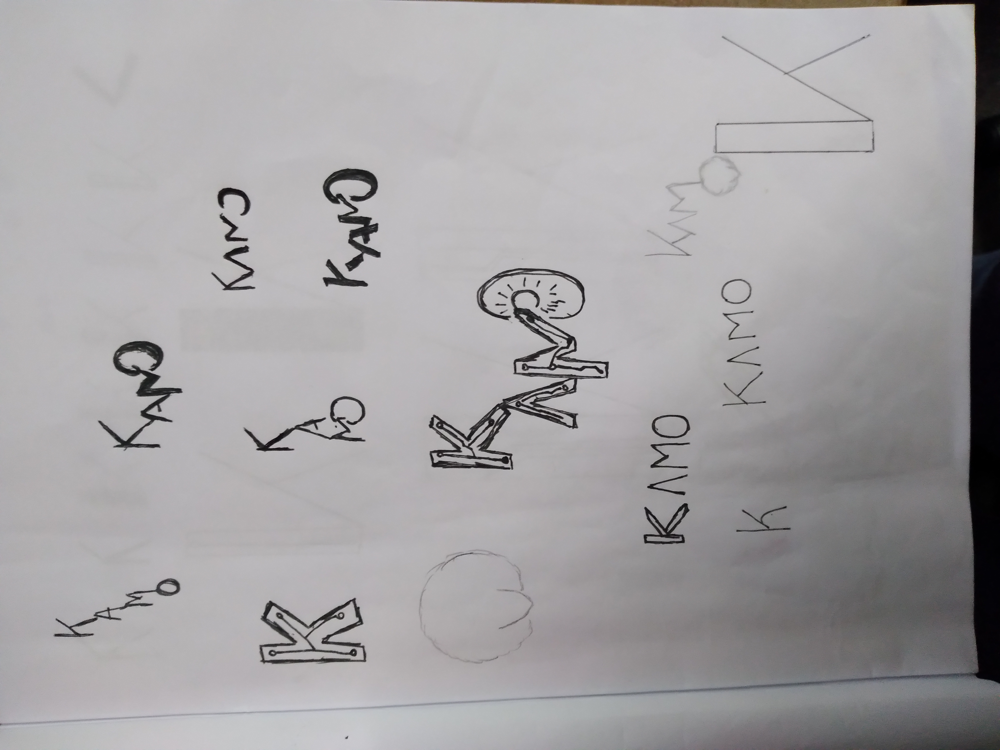
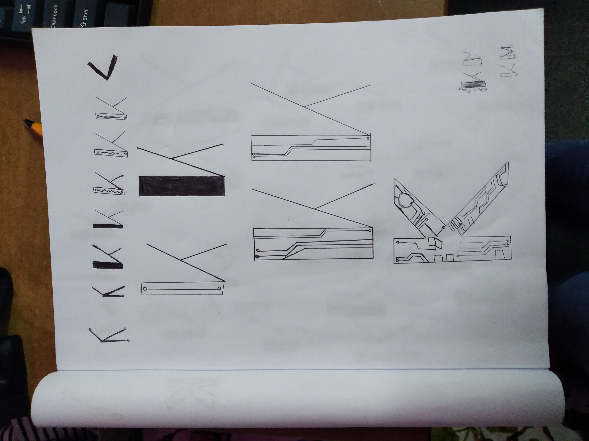
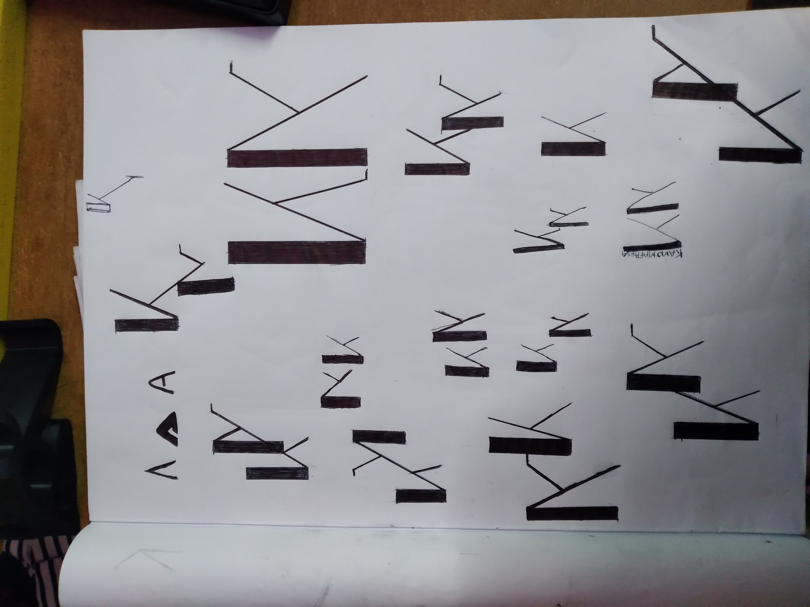
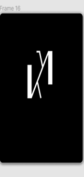
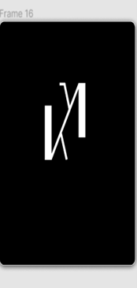

PERSONAL LOGO DESIGN
TOOLS
Pen, Sketchbook, Figma.
DESIGN PROCESS
TASK
The task was for me to design a personal logo which I would be able to use in my personal website.
PROCESS
Picking the right typography was essential for this specific logo design, because my idea for the logo style was based on lettering compositions. Going into this, I had wanted my logo to be minimal but creative; Initially, I wanted my logo to have a techno sci-fi look, because I do work with technology and code a lot and I wanted it to denote that. With this in mind, I started sketching down some ideas.
I began to sketch the lettering compositions for the name Kamo, I did not however, like any of the variations that I had came up with for the logo; so, I moved to sketching different variations of the letters, starting with the letter K.
I looked at different techno sci-fi typographies on a site called dafont.com, chose the ones I liked and moved on to adding extra details to some variations of the letter K. In the process of me doing these sketches, I decided that instead of using my name Kamo for the logo, that I should rather use my initials, which are KM. I felt that this would work stylistically, since I am going for a minimalist look for the logo; I then started sketching variations for the initials KM and chose the one that I liked.
I then moved to making digital drafts, to determine which would work best for my website.
 

The image above represents the final design that I decided to use.